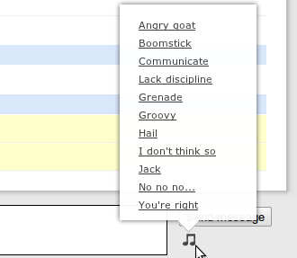
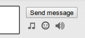

SoundCamp is a chrome extension that adds more sounds to Campfire chat sessions.
This is a a Chrome browser extension. It provides additional sounds for Campfire chat sessions.
SoundCamp adds a button to the Campfire room interface, and upon clicking it a menu is presented.
Clicking on an option in the popup menu will result in a sound being heard by any members of the chat room whose browser has this plugin installed.
The sounds in Campfire are fun, but limited. We wanted to have more. This lets us add the ones we want.
Campfire sounds can also be useful. We have a number of automated systems in place that feed into Campfire via a bot. Now our bot can provide different audible alerts.
The code is available on GitHub at no cost. You may use and modify it according to the terms of version 3 (or later, at your option) of the GNU General Public License as published by the Free Software Foundation. License Information
The simplest and intended way to play the sounds is to use the menu next to the message input box. Clicking on the musical notes icon will popup the menu, and a mouse click will send a sound request to the chat room.

Sound commands may also be sent via text input to the chat room. This may be useful if you wish to play these sounds to chrome browsers when using the Campfire chat iPhone app, or perhaps a bot or another browser.
To play the sounds, send a message in the specified format to the room. This will then be handled by SoundCamp.
:soundcamp goat
You can find the text names for each sound by inspecting the Source Code. Of course, only sounds built into the plugin can be played.
SoundCamp is a spiritual descendant of Kindling for Campfire.
SoundCamp will work well alongside Kindling. The popup menu area will have the Kindling buttons in addition to SoundCamp's musical note button.
I highly recommend this excellent plugin.
